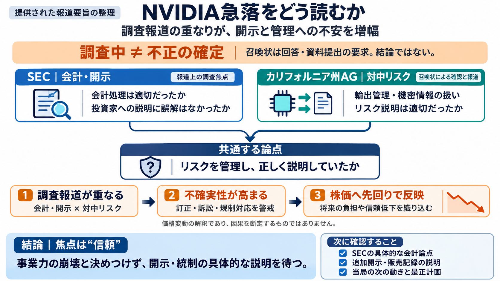

Nvidia's China Revenue Is 7%. What the Filings Really Show
#Nvidia #NVDA #SEC Subscribe + like for business stories, told from the paperwork: / @thefilingtv ### Chapters [0…

調査報道の“重なり”
SECの会計・開示調査報道と、カリフォルニア州AGの対中リスク調査（召喚状）が同時期に伝わり、市場の不安が増幅した——という構図です。
何が“確定”ではない
当局の動きは多くが「疑義の精査」であり、直ちに有罪や不正の確定を意味しません。それでも株価は、訂正・罰金・訴訟・規制対応の可能性として先回りで織り込みやすいのがポイントです。
SECの焦点
報道によると、SECは投資家を誤解させた可能性など、会計処理と投資家向けの説明（disclosure）が適切だったかを精査していると伝えられました。
州AGの焦点
カリフォルニア州AGは召喚状（subpoena）で、対中（中国）への輸出や機密情報の流出の可能性、ならびに投資家・市民へのリスク説明が適切だったかを確認すると報じられています。
論点の“連結”
会計・開示（SEC）と輸出管理・対中（州AG）が並ぶことで、「リスク判断をどう開示したか」「管理は機能していたか」という疑念が一本につながりやすくなります。
追加で出てくる材料
報道・検索情報として、10-Q等での輸出ライセンス要件に触れる記載や、Megaspeed関連の販売記録提出を求める経緯などが言及されています。調査が“抽象”から“具体”へ寄るほど、市場の警戒は強まりやすいです。
信用への波及
元CEOに関する個人的なスキャンダルや、Megaspeedなど顧客企業を巡る対中疑惑が語られることで、「管理の不備」や「説明の欠陥」を連想させ、市場の信頼が揺れやすくなります。
下落の理由
記事中の趣旨としては、不正が確定したわけではないのに大幅下落が起きています。これは市場が「最悪シナリオ」側へ確率を振り、期待と需給（感情と流動性）で価格が動いた可能性を示します。
次に見るべき
見通し改善・悪化の分岐は、「SECの具体的な会計論点」「追加開示（10-Q等）の有無」「取引先・販売記録の説明」「当局の次のステップ」に出ます。現時点は情報不足のため、断定は危険です。
結論
今回の本質は、事業力が突然崩れたというより、ガバナンスと開示の信頼性が同時に疑われ、市場の不安が株価へ波及した点です。調査段階であることを前提に、当局の具体指摘と是正計画が出るまで結論を急がないのが安全です。
#Nvidia #NVDA #SEC Subscribe + like for business stories, told from the paperwork: / @thefilingtv ### Chapters [0…
| 日付 | 出来事 | 一次資料 | --- | 2025年10月13日 | Cotton上院議員がLutnick商務長官にMegaspeedの調査を要請 | Cotton議員の書簡 | | 2025年11月19日 | NVIDIAが…
TradingKey - インテル（INTC）は前営業日の軟調な流れを引き継ぎ、火曜日の米株プレマーケットで再び3％超下落した。エヌビディアによる保有株の大幅な削減に加え、株主集団訴訟に伴う法的リスクも重なり、インテルの事業見通しやコーポレ…
TradingKey - 11月16日、米商務省と司法省はシンガポールを拠点とするクラウドコンピューティング企業Megaspeedに対する調査の最新状況を共同で発表し、米国が早くも2024年に輸出管理調査を開始し、2025年5月にエヌビディ…
materials. Sales of our H20 products were $4.6 billion for the first quarter of fiscal year 2026 prior to the new export…